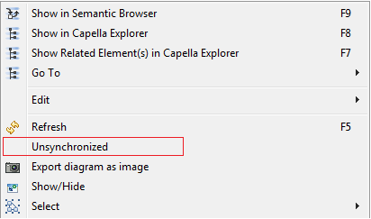

Synchronized/Unsynchronized Diagrams, Insert/Remove tools, Show/Hide wizard. The Capella diagram editor is rich and flexible, but at first, the basic concepts may be hard to get. Here, a new Class Diagram Blank is used as an example.
First, we set the diagram Unsynchronized. This means all elements will not be shown automatically.
Using the Type Insert/Remove tool, selection of the Class “PictureRequest”


The Properties of “PictureRequest” are not displayed. This is because the diagram is unsynchronized. Because elements like Properties are not displayed automatically, new tools appear in the diagram palette when switching from Synchronized to Unsynchronized

Using the Insert/Remove Properties tool, selection of one of the Properties of “PictureRequest”

The selected (and only the selected) Properties are displayed on the diagram
| Synchronizing diagrams is the default behaviour of Capella. Un-synchronizing a diagram is especially useful to manage big models:
|
Insert/Remove tools for relationships are helpful: they both allow displaying links between elements already on the diagram and displaying the source / target of the link if not yet on the diagram. Using the Relationships Insert/Remove tool on “CaptureRequest”, selection of the generalization relationship.


The target of the relationship (“CaptureRequest”) is automatically displayed on the diagram, but not its Properties.
| This kind of Insert/Remove tool for relationships is particularly useful for blank diagram as they help building the diagram (Functional Exchanges in dataflow diagrams, Connections in architecture diagrams, etc.). They are less relevant for Contextual Diagrams, which are usually based on an automatic analyse and display of relationships given one contextual element. |
We now set the diagram Synchronized. The diagram palette is back to its original state, meaning the Properties Insert/Remove tool for example is not present anymore.

After a Refresh, all Properties of both classes are displayed. And any new Property added by any mean (editors for example) will be automatically displayed after a Refresh of the diagram.

Here is a non-exhaustive list of elements in different diagrams that are likely to appear automatically when the diagram is Synchronized: Function Ports, Component Ports, Properties of Classes, Exchange Item Allocations of Interfaces, any existing relationship between two elements on a diagram, Deployed Components, etc.
Using the Show/Hide wizard, selection of the Properties “hResolution” and “vResolution” of “PictureRequest”.


The ”hResolution” and “vResolution” Properties are not displayed anymore. Their graphical representations still exist on the diagram, but they are not visible anymore. They will not be back after a Refresh.
Working with complex diagrams can be very hard and may slow down user workflows. To enable a better complexity management when dealing with diagrams, Capella provide a “Remove hidden elements” command. It is accessible from contextual menu on aird files or any model element.

If the command is launched from the aird it will process all the underlying diagrams. If it is launched from a model element it will process all diagrams under this specific model element. When launched, the command will remove non visible elements. This includes hidden elements but also non visible elements like a FunctionalExchange between a visible Function and a hidden one. A popup window opens inviting user to choose to unsynchronise diargrams.

In the case of “Unsynchronize diagrams” is checked, all the elements with Unsynchronizable and Not synchronized mappings will be removed from diagrams.
In the case of “Unsynchronize diagrams” is unchecked, only elements with Not synchronized mappings will be removed from diagrams.
At the end, the command will report information messages into the Information View. Messages have the following format: Removing <nb_of_elements> elements from diagram: <diagram_name> e.g. Removing 5 elements from diagram: [LAB] Logical System - Logical Architecture Blank
Let us consider the following LAB diagram:

If we hide LC1 and C1 we get the following result :

LC1 and C1 are now hidden elements.
Let us now launch the contextual command on Logical System element.

If we launch the command with “Unsynchronize diagrams” checked, LC1 and C1 will be removed from diagram.

But if we launch it with “Unsynchronize diagrams” unchecked, only C1 will be removed from diagram. This is due to the level of synchronisation of the mappings, LC1 has a Not synchronised level and CE1 has an Unsynchronisable level.